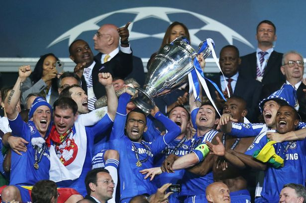
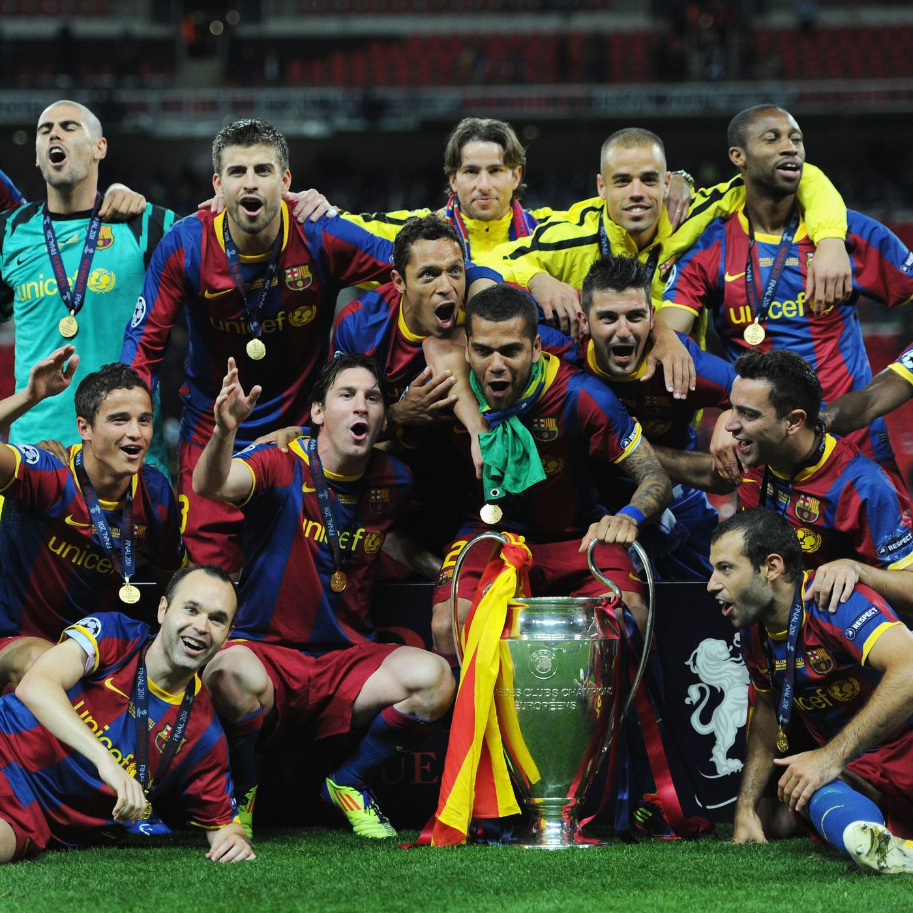

L'edizione 2009-2010 fa registrare la vittoria dell'Inter di Jose Mourinho, che torna a vincere il trofeo dopo 45 anni. Per i nerazzurri è la terza Coppa dei Campioni della loro storia, la prima da quando ha cambiato denominazione in UEFA Champions League. Nella finale del 22 maggio 2010 a Madrid si sfidano quindi Bayern Monaco e Inter:i due club si affrontano dopo aver realizzato entrambi un double coi successi in campionato e coppa nazionale. Allo Stadio Santiago Bernabeu, &# una doppietta di Milito a sancire il 2-0 con cui l'Inter, dopo quasi mezzo secolo, torna campione d'Europa[79] diventando inoltre la prima squadra italiana a centrare un treble;
Il 28 maggio 2011 il Barcellona si laurea campione d'Europa per la quarta volta nella sua storia battendo a Wembley il Manchester Utd Con una squadra giovane, formata in prevalenza da ragazzi provenienti dalle giovanili, ottiene la terza vittoria in sei anni.
Il 19 maggio 2012, il Chelsea di Roberto Di Matteo vince la prima Champions League della sua storia, battendo in finale il Bayern Monaco ai calci di rigore (3-4), dopo l'1-1 dei tempi regolamentari. Grazie alla vittoria del Chelsea, l'Inghilterra diventa, a pari merito con l'Italia, la seconda nazione ad aver vinto più volte l'ambito trofeo.

